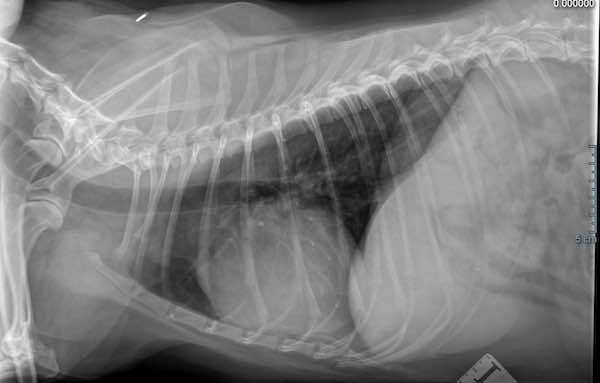
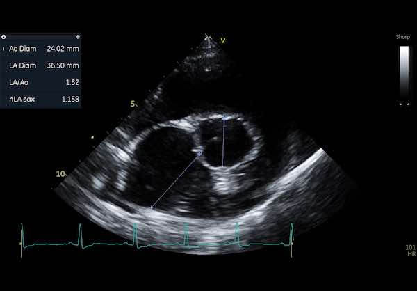

🩺 Heart Murmurs in Dogs: What You Need to Know
Has your vet told you your dog has a heart murmur? Is it serious? Should you be worried?
Published on: March 3, 2025
Reviewed on: March 3, 2025
If your dog has been diagnosed with a heart murmur, you’re in the right place. I’m Dr. Dave Evans, a veterinarian with over 20 years of experience and a specialist in cardiology. In this article, I’ll break down what heart murmurs are, what causes them, and what you should do if your dog has one.
What is a Heart Murmur?
A heart murmur is an abnormal sound heard during a veterinary examination, typically with a stethoscope. Normally, a dog’s heart sounds like a steady ‘lub-dub, lub-dub.’ But when there’s a heart murmur, you’ll hear a whooshing or swishing sound instead.
So, what causes a heart murmur?
The cause is typically turbulent blood flow in the heart. Imagine a fast-moving river that flows quietly until it reaches a constriction, such as a bridge or rapids. That constriction causes the water to become noisy and chaotic. The same principle applies to blood flow inside your dog’s heart. When blood flow becomes turbulent due to an issue like a leaky valve or narrowing of a vessel, it creates sound waves that we hear as a murmur.
Image: Turbulent flow on colour doppler interrogation of a dog's aorta
What Causes Heart Murmurs?
There are various reasons why your dog might have a heart murmur:
- ❤️ Innocent murmurs: These are harmless and often seen in puppies. Many of these murmurs will go away as the puppy grows.
- ❤️ Flow murmurs: Found in young, healthy, athletic dogs, particularly if they are stressed during a vet visit.
- ❤️ Underlying heart disease: Some murmurs signal heart issues, such as:
- Congenital heart defects: Some dogs are born with abnormal heart structures.
- Leaky heart valves: Common in older dogs, particularly small breeds like Cavalier King Charles Spaniels and Chihuahuas.
- Heart muscle disease: Larger breeds like Dobermans may develop conditions like dilated cardiomyopathy.
- Other conditions: Issues such as anaemia or infections can also contribute to murmurs.
Symptoms to Watch For
A heart murmur itself doesn’t always mean your dog has heart disease, but it can be an early sign. Murmurs are often discovered before any other symptoms show, which is fortunate because heart conditions can be treated more effectively when caught early.
If your dog has a murmur, it’s essential to monitor for the following symptoms that may indicate more severe issues:
- Coughing, especially at night or after exercise
- Lethargy or reduced activity
- Rapid or difficulty breathing, particularly if your dog’s sleeping respiratory rate is over 30 breaths per minute
- Fainting or collapse
- Decreased appetite or weight loss
One key measurement is your dog’s sleeping respiratory rate. I’ll have a detailed guide on how to monitor this in the description below.
Diagnosing Heart Murmurs
When a murmur is detected, the next step is determining how serious it is. Your vet may recommend the following diagnostic tests:
🩺 Echocardiogram (ECG): This is an ultrasound of the heart and is one of the best ways to see how well your dog’s heart is functioning.
🩻 Chest X-rays: To check the size of the heart and assess lung health.
🩸 Blood tests: To rule out other potential health issues and screen for conditions that could affect heart health.
⚡ ECG for rhythm disturbances: If your vet suspects irregular heartbeats.
An echocardiogram is typically the most informative test and provides detailed images of the heart’s structure and function.
On a chest radiograph (or X-ray) the heart appears in silhouette only.
While on an echocardiogram you can measure all the internal chamber sizes to fractions of a millimetre.
Treatment and Management
Not all heart murmurs require treatment, but if the murmur is linked to an underlying condition, your dog may need medication. Some common treatments include:
💊 Pimobendan: A medication that boosts the heart’s pumping function, delaying further heart deterioration.
💊 Diuretics: These reduce fluid buildup in the lungs and are often used in cases of congestive heart failure.
💊 ACE inhibitors: Help blood flow more easily and reduce harmful changes to the heart’s structure.
🩻 In some areas, surgical interventions, such as catheter techniques and even open-heart surgery, are available to treat conditions like heart valve diseases.
It’s important to remember that early detection is key to successful management. If your dog is diagnosed with a heart murmur, talk to your vet about treatment options and regular monitoring.
What Can You Do as a Pet Owner?
If your dog has a heart murmur, there are several things you can do as a responsible pet owner:
✔️ Follow your vet’s advice on diagnosis and monitoring.
✔️ Request an echocardiogram performed by an expert cardiologist to get detailed insights.
✔️ Keep up with regular check-ups and heart screenings.
✔️ Track your dog’s sleeping respiratory rate and energy levels.
✔️ Ensure your dog has a healthy weight and balanced diet.
By staying proactive and involved in your dog’s care, you can help them live a happy and healthy life. Regular check-ups will allow your vet to monitor any changes in your dog’s heart health over time.
Conclusion
Heart murmurs in dogs can sound alarming, but many dogs with murmurs live long, healthy lives when treated appropriately. The key is early detection and regular monitoring.
If you found this information helpful, don’t hesitate to share it with other pet owners! And if you have any questions or concerns about your dog’s heart health, feel free to leave a comment below—I’d love to help!
🐶🐾 Take care of your furry friend! 🐾❤️
Check out my video on the same topic if you want a more in depth explanation: